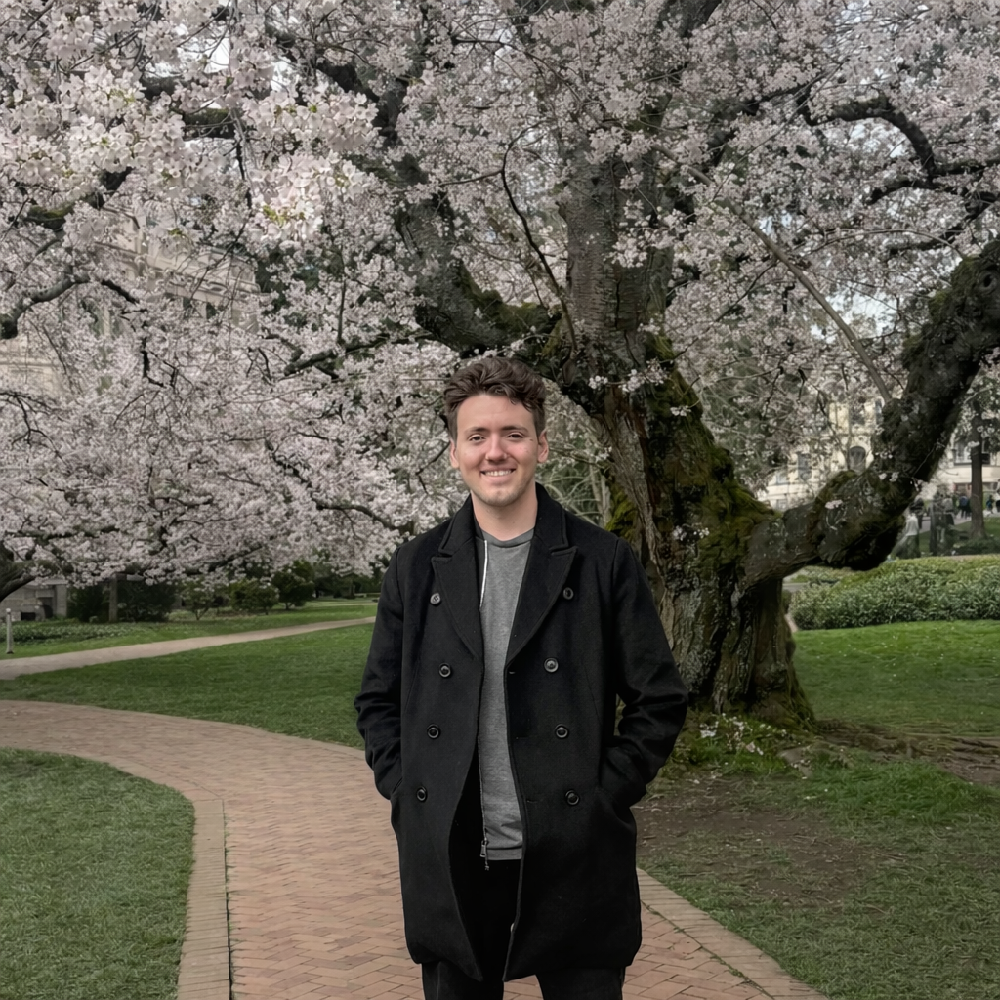
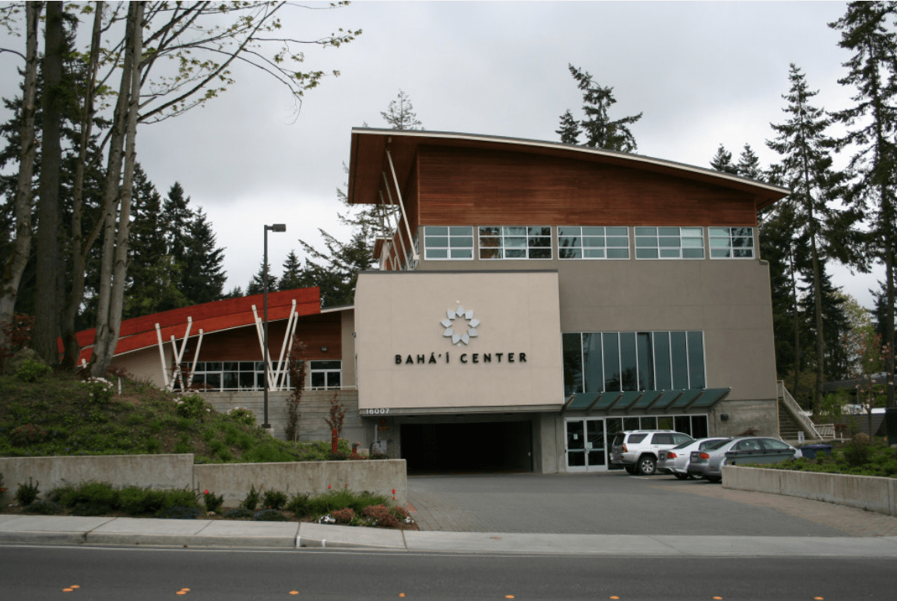

Hi, I'm Callen!
GAME DEVELOPER, PROGRAMMER CREATOR.

About Me
My dad taught me how to code when I was 10 years old. A decade later, I've created nearly twenty games, working and learning alongside industry professionals. My peers taught me that collaboration is just as important as knowing how to code, and that great games need a great team to be successful.
When I'm not making games, you can find me enjoying the latest Brandon Sanderson book, or traveling with my friends. I was born in Lisbon, Portugal, and every year I visit our family and explore the beautiful streets of Cascais! I'm also a huge fan of Percy Jackson (which is how I got my online alias!)
What I've Done
I studied game development at DigiPen Institute of Technology, where I spent years building games alongside talented peers and learning how strong teams collaborate. I also previously interned at ArenaNet, where I gained firsthand experience working alongside professional developers in a production environment.
Those experiences helped shape how I approach technical quality, iteration, communication, and teamwork, and they played a big role in how I grew as both a programmer and a teammate.

JYSEP
As a Baha'i, I've also been involved with JYSEP, the Junior Youth Spiritual Empowerment Program. It's been a meaningful part of my life because it focuses on service, mentorship, and helping younger people build confidence, moral reasoning, and a sense of purpose in their communities.
That involvement has influenced how I think about leadership and relationships with others. It reminds me that growth isn't just about technical skill, but also about learning how to support people, listen well, and contribute to something larger than yourself.
Coding With Kids
In my spare time, I work as an instructor at Coding with Kids, helping aspiring programmers learn how to create their own games. It isn't always easy working in a classroom, but seeing the look on their faces when they get something to work is priceless.
I've also worked for TIE (Technology & Innovation in Education), a non-profit that focuses on empowering educators and improving classroom curriculum.